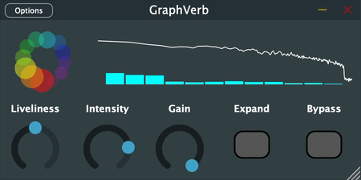
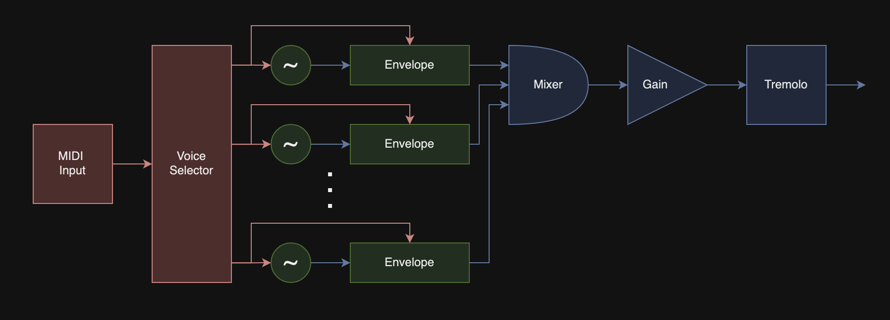

GraphVerb
Spectral-aware Reverb Processing in C++ with JUCE

GraphVerb is a JUCE-based audio plugin that performs dynamic, spectral-aware reverb processing using graph analysis and K-Means clustering.
The process begins with spectral analysis using STFT, followed by constructing a spectral graph where each bin is a node and clustering it via a k-means variant. Each cluster is processed through an energy-scaled reverb, and the weighted wet signals are mixed with the dry signal for output.
dibiff
Directed Audio Graphs in C++
dibiff is a real-time audio processing library in C++17 that contains a collection of simple and advanced Digital Signal Processing (DSP) elements, which can be processing in a multi-threaded directed graph using modern C++ principles.
Precision and timing were carefully monitored and managed to ensure low-latency and high-throughput for easy integration into any environment.
CMake is used for build configuration, and the Eigen library is used for vector math and Single-Instruction-Multiple-Data (SIMD) operations.
There is already support for a range of audio-processing blocks, such that simple synthesizers can be constructed and played in real-time via MIDI controller:

FLAP
dibiff GUI in C++
Flexible Layout Audio Playground - a GUI companion in C++17 for dibiff using OpenGL to allow for multiplatform targets, GLFW for window management, CMake for build configuration, and ImGui for GUI bootstrapping.
This tool allows the user to design an audio graph of interconnected audio objects, each operating on a block of sampled audio, in a drag-and-drop environment.
OpenGL Renderer
Model Renderer using OpenGL and GLFW in C++

Features:
- Geometric shape rendering
- Model loading using Assimp
- Directional and Point Light Sources
- Blinn-Phong lighting model with linear gamma correction
- Directional shadow mapping
- Omnidirectional shadow maps
- Normal mapping
- Parallax mapping
- HDR and Bloom
The renderer uses OpenGL version 3.3 which is very widely supported. GLAD is used to handle the locating of driver-specific functions, enabling interoperability between different systems. GLFW is used to provide easy functionality for creating an OpenGL instance, handling user input, and displaying the buffer to a window.
The engine handles the inputs from the keyboard and mouse, and therefore also handles the control of the camera. The camera and inputs are passed to the scene, which is rendered every frame. The scene contains a mixture of objects, models, and lights. In addition, there are various shaders attached to the scene that are used for different rendering conditions - like the generation of shadows.
There are four types of shaders used in the main rendering loop:
- The
directionalShadowShader performs the rendering for the depth map used in generating directional shadows.
- The
pointShadowShader performs the rendering for the depth cube map used in generating point shadows.
- The
skyboxShader is used to render the optional skybox, to add some more life to the scene.
- And finally, the
lightingShader does most of the heavy lifting, implementing the Blinn-Phong lighting model.
To generate both directional and point shadows, a shadow map is used - the scene is rendered from the point of view of the light source, and only the depth buffer is rendered. This allows each fragment to determine whether or not it is blocked from the light source.
For directional light sources, an orthographic projection matrix is used to render the depth buffer of a scene. For point sources, a cube map is used instead.
Model loading is performed used Assimp, which allows for the importing of models in a multitude of formats.
WebGL Renderer
Brownian Motion Renderer using WebGL
The above Brownian Motion is rendered in-browser directly using WebGL, which can utilize your GPU for better performance.
Brownian motion is an estimation of the random motion of particles that are suspended in a medium like a liquid or gas.
The noise map is generated by a fragment shader that generates fractal patterns using a fractal brownian motion algorithm.